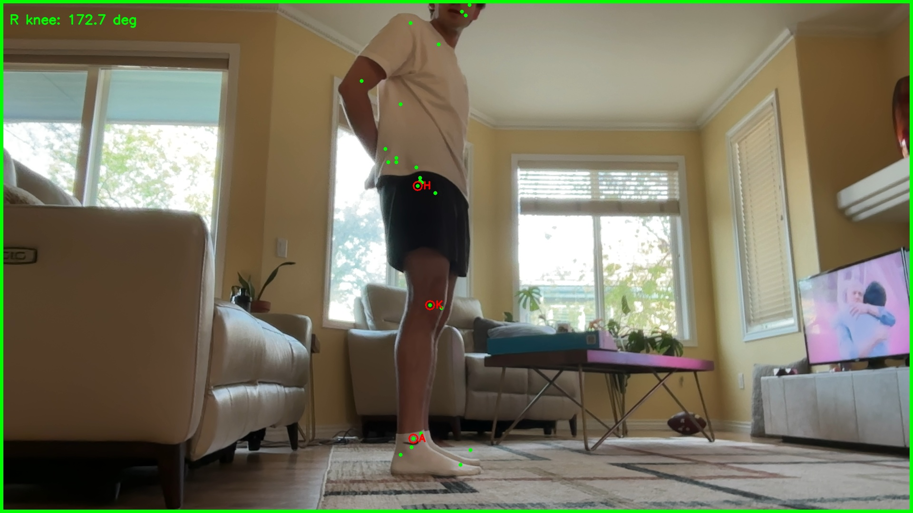
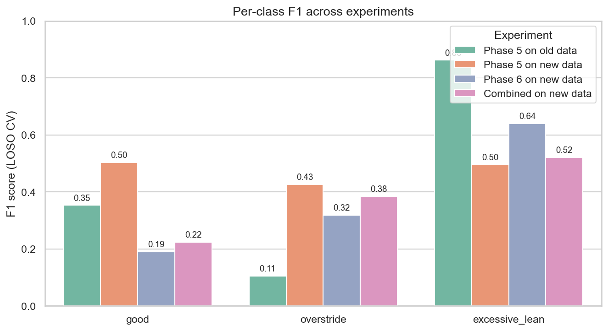

Machine Learning · CSCI 4622
A computer-vision pipeline that watches a runner from the side, tracks 33 body keypoints in real time, and learns to flag form faults like overstriding and excessive trunk lean.

I'm a marathon runner with a history of recurring injuries, and I've learned firsthand that subtle differences in mechanics, like overstriding, heavy heel striking, or poor trunk lean, are major contributors to injury risk. Most runners have no easy way to get objective feedback on their form. I wanted a tool where anyone could point a camera at themselves and get an honest read on what their body is actually doing.
The system is a full pipeline from raw webcam video to a trained classifier:
The first model looked incredible: a stratified 80/20 split over all rows hit 99.7% accuracy. That number is a trap. With only a handful of recording sessions per label, a random row split leaks session identity into the test set, so the model quietly learns "which video is this" rather than "what form is this."
Re-running with leave-one-session-out cross-validation (holding out an entire session at a time) told the real story: accuracy fell to ~44%. excessive lean stayed cleanly separable because trunk posture is a stable, robust signal, but good and overstride were nearly indistinguishable.
| Evaluation protocol | Accuracy | overstride F1 | excessive lean F1 |
|---|---|---|---|
| Naive 80/20 row split | 99.7% | n/a | n/a |
| Leave-one-session-out (v1 data) | 43.5% | 0.11 | 0.86 |
| Leave-one-session-out (v2 data) | 47.0% | 0.43 | 0.50 |
I diagnosed the failure: the foot_offset feature was averaged across
the whole gait cycle, but the foot swings forward and backward every
stride, so its per-session mean sits near zero regardless of overstriding. The
real overstride signal lives at the instant of foot contact, and averaging
erased it.
The single biggest improvement came not from a fancier model or cleverer features, but from better data collection. Re-recording with more deliberate form and cleaner camera setups lifted overstride F1 from 0.11 to 0.43, a ~4× gain with no change to the algorithm at all.

Next steps are more sessions per class to stabilize the cross-validation variance, a proper streaming foot-strike detector for genuine real-time feedback, and a comparison against a small neural network. The end goal is unchanged: point a camera at any runner and hand them feedback worth acting on.